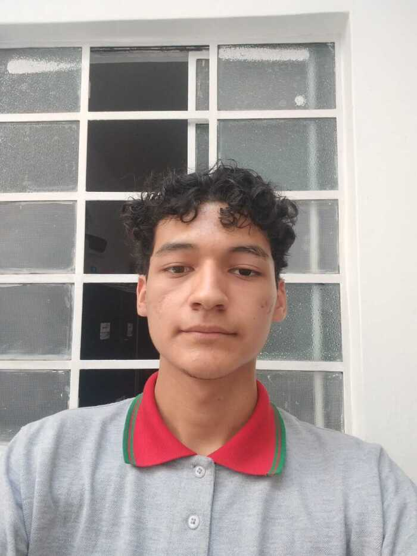

Home
About Me
Not a big fan of working out, but a keen learner of languages, thereby programming languages cannot be excepted. I'm Hernan, but everybody usually calls me by my last name Cancino, I'm really into learning new things to the point that I spend thousands of hours reading. I'm very self-sufficient and if it's possible, I try to help everybody. There's no better feeling than serving our fellows!
Student Photo

Web Certificate Courses
Total credits for courses listed above: 0